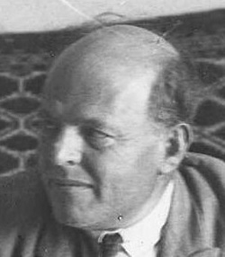

|  |
H.N. BialikA Jewish poet who wrote primarily in Hebrew but also in Yiddish. Bialik was one of the pioneers of modern Hebrew poetry. Bialik was born in Ivnytsia [uk], Volhynian Governorate in the Russian Empire to Itzik-Yosef Bialik, a scholar and businessman from Zhitomir, and his wife, Dinah-Priveh.[2] He had older brother Sheftel (born in 1862) and sister Chenya-Ides (born in 1871), as well as a younger sister Blyuma (born in 1875).[3] When Bialik was still a child, his father died. In his poems, Bialik romanticized the misery of his childhood, describing seven orphans left behind—though modern biographers believe there were fewer children, including grown step-siblings who did not need to be supported. Be that as it may, from the age 7 onwards Bialik was raised in Zhitomir by his Orthodox grandfather, Yankl-Moishe Bialik. |
| Name | Year of publication |
|---|---|
| Alone | 1902 |
| Return | 1903 |